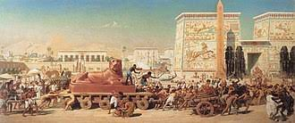

Egyiptom
Ez inkább nyugdíjas állás a légiónál. Mióta legfőbb vezérünk, meghódította és Kleopátrával is kellemes viszonyt alakított ki, nem sok esemény történik arrafelé. Hacsak az nem számít eseménynek, hogy egy-egy ostoba tökfilkót meg mar valami kígyó, vagy skorpió. Na igen: a vadvilág kissé veszélyes, és a száraz rendkívül meleg sem kedvező az embernek. De ha ez sem lenne, a légiósainnk biztosan egymást írtanák ki fene nagy unalmukban. Olykor-olykor persze el kell folytani egy-egy lázadást, de mindent összevetve az újoncokat legfeljebb kiképezni vagy büntetésből küldjük ide.
